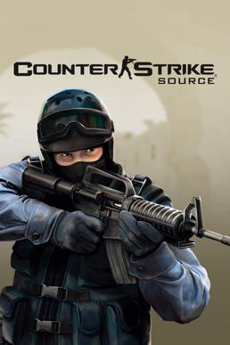

Counter-Strike
Counter-Strike, the iconic first-person shooter (FPS) game, has taken the gaming world by storm since its inception in the late 1990s. Over the years, it has gone through several iterations, each with its unique features and improvements. It is a series of multiplayer first-person shooter video games in which teams of terrorists battle to perpetrate an act of terror (bombing, hostage-taking, assassination) and counter-terrorists try to prevent it (bomb defusal, hostage rescue).
Counter-Strike (1999)

The original Counter-Strike, often referred to as Counter-Strike 1.6, began as a mod for Half-Life. It quickly gained popularity for its intense, team-based gameplay that pitted terrorists against counter-terrorists. This version laid the foundation for what would become a legendary esports title, with iconic maps like Dust2 and Inferno becoming household names in the gaming world.
Counter-Strike: Condition Zero (2004)
Condition Zero aimed to provide a single-player experience in the Counter-Strike universe, featuring a campaign mode and improved graphics. While it didn't gain the same competitive popularity as its predecessor, it added new maps and gameplay options that catered to both casual and competitive players.
Counter-Strike: Source (2004)
Source brought the game engine up to date with improved graphics and physics. The revamped physics engine made for more realistic interactions with the environment, while the updated visuals gave classic maps a fresh look. Source marked a transitional phase for Counter-Strike, introducing many players to the franchise for the first time.
Counter-Strike: Global Offensive (2012)

Counter-Strike: Global Offensive (CS:GO) was the most recent until recently and enduring iteration of the series. It was a monumental shift for Counter-Strike, bringing the game firmly into the modern era. CS:GO introduced new gameplay mechanics, improved graphics, and a matchmaking system. The addition of weapon skins and microtransactions also created a thriving marketplace within the game, fostering a vibrant esports scene. CS:GO's competitive mode, weapon balancing, and regular content updates have kept the game relevant for years. It has become a staple in the world of esports, with major tournaments like the ESL Pro League and the Intel Extreme Masters featuring top-tier players and massive prize pools.
Counter-Strike: 2 (2023)

The next iteration of the series was releases this year on 27 September. This brings the game to the new Source 2 engine which alongside improving graphical fidelity will help development easier and more efficient. It brings alondside new ranking system called Premier. Although a number of maps and game modes are missing at launch the community is hopeful they will revamp them after fixing core gameplay bugs and glitches first.